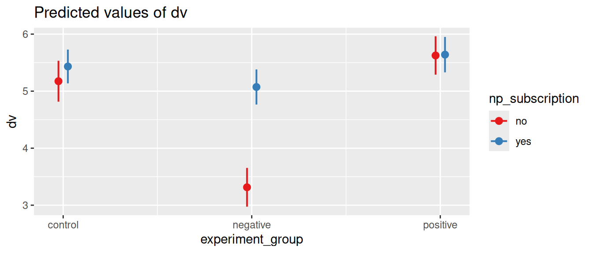

library(afex)
library(emmeans)
library(sjPlot)
library(tidyverse)ANOVA
What is an ANOVA?
ANOVA stands for Analysis of Variance, which can refer to a number of different statistical tests that are used to compare means between two or more groups.1 It is a commonly used test in experimental research, where the key independent variable is usually categorical (e.g., treatment groups, control group). There are different types of ANOVA to cover a wide range of research designs. The most common ones are:
- One-way ANOVA.
- Purpose. Compare means between-subjects in different groups.2
- Example. We want to know how the design of a health care robot affects how comfortable people feel about interacting with the robot. To test this we divide participants into three groups, that are shown three different designs (Alice, Nao, and RoboCop). They then answer multiple questions based on which we measure a comfort rating scale. We can now use One-way ANOVA to compare the mean comfort rating between the three groups.
- Two-way ANOVA.
- Purpose. Compare means between-subjects in different groups, for two independent variables.
- Example. In addition to comparing three different designs, we could also compare between using a male or female voice. We can then divide participants over six groups (3 designs * 2 voices), and use two-way ANOVA to test whether the design and voice have an effect on the perceived attractiveness, and whether there is an interaction between the two.
- Repeated measures ANOVA.
- Purpose. Compare means within-subjects measured at different timepoints.3
- Example. Instead of the self-reporting comfort rating, we could measure how people react to interacting with a health care robot by measuring their heart rate. We could then measure the heart rate of participants before, during, and after interacting with the robot. We can then use repeated measures ANOVA to compare the heart rate at each stage.
- Mixed-design ANOVA.
- Purpose. Combine between-subjects and within-subjects factors.
- Example. This allows us to measure the effect of the design (one-way anova example) on the change in heart rate (repeated measures example). We divide participants into three groups that are shown the three different designs, and measure the heart rate of participants before, during, and after interacting with the robot. We can then use mixed-design ANOVA to test the effect of the design on the change in heart rate.
How to use it
We’ll use the afex and emmeans packages to perform ANOVA tests, and we’ll use the sjPlot package to visualize the results. To prepare the data we’ll again use the tidyverse package.
For our examples we’ll use our Practice data. In this data have a (fictional) experiment where we study the effect of popular media on people’s trust in journalists. Specifically, we’re using the following variables:
- id. A unique identifier for each participant.
- experiment_group. The group that participants were assigned to. Each group viewed a different movie that was either neutral (control), positive, or negative about journalism.
- np_subscription. Whether participants have a subscription to a national newspaper, with values yes or no.
- trust_t1 and trust_t2. The trust in journalists, measured before (t1) and after (t2) watching a movie about journalism.
The experiment_group and np_subscription variables are our independent variable. To use these in the ANOVA, we’ll explicitly convert them to factors, to indicate that they are categorical variables.
d <- read_csv("https://tinyurl.com/R-practice-data") |>
mutate(experiment_group = as.factor(experiment_group),
np_subscription = as.factor(np_subscription))One-way ANOVA
In one-way ANOVA we compare the means of a dependent variable between two or more groups in a single independent variable. We can use this to test the main question of our experiment: whether the movie (experimental_group) has an effect on the trust in journalists (trust_t2).4
We use the aov_car function from the afex package to fit the ANOVA model. The formula that we use in this function is, as usual, dependent_variable ~ independent_variable. However, we also need to specify the unique user id (id) using the Error function. This way we explicitly clarify that each row in the data belongs to a unique participant in the study, which prevents you from mixing up between-subjects and within-subjects effects (more on this in the repeated measures section) So the full formula is dependent_variable ~ independent_variable + Error(id).
m = aov_car(trust_t2 ~ experiment_group + Error(id), data=d)
mAnova Table (Type 3 tests)
Response: trust_t2
Effect df MSE F ges p.value
1 experiment_group 2, 597 2.95 34.13 *** .103 <.001
---
Signif. codes: 0 '***' 0.001 '**' 0.01 '*' 0.05 '+' 0.1 ' ' 1When we print the output of the aov_car function, we get the main results of the ANOVA test. In this one-way ANOVA we have a single independent variable, which is the experiment_group. The output shows us the results of the F-test (\(F_{2, 597} = 34.13, p < 0.001\)) which tells us that the difference between the groups is significant. In other words, the movie that participants watched had a significant effect on their trust in journalists.
We also get an \(eta^2\) (eta squared) value in the ges column (generalized eta squared), This is a measure of effect size that tells us how much variance in the dependent variable is explained by the independent variable (similar to the \(R^2\) value in regression).
Comparing between groups
The \(eta^2\) and F-test only tell us that there is a difference between the groups, but not where the difference is. To compare bewteen the groups, we can first of all look at their means. For this we’ll use the emmeans function from the emmeans package.
means = emmeans(m, "experiment_group")
means experiment_group emmean SE df lower.CL upper.CL
control 5.33 0.121 597 5.09 5.57
negative 4.28 0.121 597 4.04 4.52
positive 5.63 0.121 597 5.40 5.87
Confidence level used: 0.95 Now we can see that the lowest trust score is in the negative group, and the highest in the positive group. However, we do not yet know whether the diffences between all the groups are significant. It could be that the positive group is significantly higher than the negative group, but not significantly higher than the control group. To test this we can use the pairs function to get the pairwise comparisons for the means we just computed. With adjust = 'bon' we use the Bonferroni correction to adjust for multiple comparisons5.
pairs(means, adjust='bon') contrast estimate SE df t.ratio p.value
control - negative 1.047 0.172 597 6.097 <.0001
control - positive -0.306 0.172 597 -1.780 0.2265
negative - positive -1.352 0.172 597 -7.877 <.0001
P value adjustment: bonferroni method for 3 tests Here we see all possible combinations of groups. The control - negative (control minus negative) row tells us how much the trust score in the control group is higher than in the negative group, and whether this difference is significant.
Finally, we can visualize the results. afex has a built-in plot function (afex_plot), but throughout this book we often use the flexible plot_model function from the sjPlot package, and we can use this here as well! We can get the linear model from the aov_car output using $lm, and then use the plot_model function to visualize the results.
plot_model(m$lm, type='pred', terms='experiment_group')
Two-way ANOVA
In a two-way ANOVA we compare the means of a dependent variable between two or more groups in two independent variables. To demonstrate this we’ll use the np_subscription variable as a second independent variable.
The formula for a two-way ANOVA is dependent_variable ~ independent_variable_1 * independent_variable_2 + Error(id). The * symbol is a shorthand for including both the main effects and the interaction effect between the two independent variables.
m = aov_car(trust_t2 ~ experiment_group * np_subscription + Error(id), data=d)Now our output shows three F-tests: one for the main effect of experiment_group, one for the main effect of np_subscription, and one for the interaction effect between the two. We also get three \(eta^2\) values, one for each effect, which tell us how much variance is explained by each effect.
Comparing between groups
We can again use the emmeans function to get the means for each group. However, we have quite a lot of combinations now. We have 6 groups (3 groups * 2 subscription types), which makes 15 pairwise comparisons.
Let’s visualize the results first to get a better idea of how the two independent variables interact to affect the trust in journalists.
plot_model(m$lm, type='pred', terms=c('experiment_group', 'np_subscription'))
Here we see that the effect of np_subscription (having a newspaper subscription) mostly matters for the negative group. It seems that overall people that watched a negative movie have a lower trust in journalists, but this is mostly true for people that do not have a newspaper subscription. In other words, people that have a newspaper subscription might not be as affected by the negative movie.
We can now use the emmeans function to test these differences. To see how the effect of experimental_group is different for people that do or do not have a newspaper subscription, we can look at means of the experiment_group variable conditional on (by) the np_subscription variable.
means = emmeans(m, 'experiment_group', by='np_subscription')
meansnp_subscription = no:
experiment_group emmean SE df lower.CL upper.CL
control 5.17 0.183 594 4.82 5.53
negative 3.31 0.173 594 2.97 3.65
positive 5.63 0.171 594 5.29 5.96
np_subscription = yes:
experiment_group emmean SE df lower.CL upper.CL
control 5.43 0.151 594 5.14 5.73
negative 5.07 0.157 594 4.77 5.38
positive 5.64 0.158 594 5.33 5.95
Confidence level used: 0.95 pairs(means, adjust='bon')np_subscription = no:
contrast estimate SE df t.ratio p.value
control - negative 1.860 0.252 594 7.393 <.0001
control - positive -0.452 0.250 594 -1.804 0.2153
negative - positive -2.312 0.244 594 -9.491 <.0001
np_subscription = yes:
contrast estimate SE df t.ratio p.value
control - negative 0.360 0.217 594 1.656 0.2947
control - positive -0.208 0.218 594 -0.951 1.0000
negative - positive -0.568 0.223 594 -2.550 0.0330
P value adjustment: bonferroni method for 3 tests We can now compare how the movie affects the trust in journalists, while taking into account how this is conditional on whether people have a newspaper subscription.
Footnotes
If you are familiar with the t-test, you can think of ANOVA as a generalization of the t-test, which can only compare two groups.↩︎
This is similar to an independent samples t-test, but can be used for more than two groups.↩︎
This is similar to a paired samples t-test, but can be used for more than two groups. This is primarily used for within-subjects designs, where the same participants are measured multiple times.↩︎
We’re using the trust score after watching the movie. It is ok to ignore the trust score before watching the movie, because we’ve randomly assigned participants to the different groups. This means that the trust score before watching the movie should be the same in each group. However, as we’ll show below, we could also use a repeated measures ANOVA to compare the trust score before and after watching the movie.↩︎
When you compare multiple groups, the chance of finding a significant difference by random chance increases. The Bonferroni correction adjusts the p-values to account for this.↩︎